Lipid
Plasma lipoproteins


 ### 運輸 {#運輸 }
- Chylomicrons 裝 Tg
### 運輸 {#運輸 }
- Chylomicrons 裝 Tg
- HDL 的蛋白質多，帶 cholesterol 回肝
- VLDL 運出肝

Cholesterol ester
- Cholesterol ester 完全疏水，能聚的更密
LDL
- apoproteins CII
- apoproteins B100
endocytosis 進入cell後負回饋
抑制可降血脂
- 抑制HMG-CoA
- 減少 LDL Receptor
- 促進ACAT
- 促進 Cholesterol ester形成
- 調控 LDL receptor 表現

Lipid acid
氧化
- β氧化一圈少兩碳

Fatty acid activation
- Long chain (10-20)
- mainly in ER
- Medium chain (4-12)
- mitochondria matrix
穿膜
- 外膜上加 Acetyl-CoA
- Carnitine
- 標記送進matrix
- Carnitine-acylcarnitine translocase
- 轉運 Carnitine, Fatty acyl-Carnitine
- Carnitine acyltransferase I (CPTI)
- 外膜，加上Carnitine
- Carnitine acyltransferase II (CPTII)
- 內膜，回收Carnitine

The β-oxidation pathway
粒線體基質
β氧化數逐漸上升
Acyl-CoA dehydrogenase
- α-β氧化去氫
- 產生 FADH2
- Trans
Enoyl-CoA hydratase
- 水合產生2°醇
3-L-hydroxyacyl-CoA dehydrogenase
- 氧化產生酮
- NADH
β-ketothiolase (thiolase)
- 切下一個Acetyl-CoA

進入 TCA cycle
- Acetyl CoA + oxaloacetate → Citrate
能量
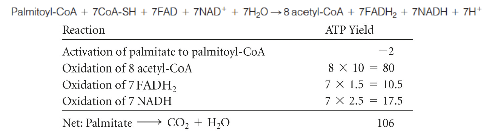- 一個Acetyl-CoA 進入 Citric Acid Cycle 產生 3NADH + FADH2 + ATP/GTP
unsaturated fatty acids
cis
enoyl-CoA isomerase
- 3-cis到2-trans
2,4-dienoyl-CoA reductase
- 消耗NADPH
- 2-trans,4-cis烯轉成3-cis

propionyl-CoA

Ketogenesis

 - 一堆Acetyl-CoA沒有OAA能用（缺糖，缺碳）
- Liver mitochondria 先存電子進去( β-hydroxybutyrate)
- 組織 β-hydroxybutyrate 氧化回 2Acetyl-CoA+NADH
- β-ketoacyl-CoA transferase( S-CoA 攻擊酸)
- 一堆Acetyl-CoA沒有OAA能用（缺糖，缺碳）
- Liver mitochondria 先存電子進去( β-hydroxybutyrate)
- 組織 β-hydroxybutyrate 氧化回 2Acetyl-CoA+NADH
- β-ketoacyl-CoA transferase( S-CoA 攻擊酸)
- β-ketothiolase
- 兩個 Acetyl-CoA 產生 Acetoacetyl-CoA

- 兩個 Acetyl-CoA 產生 Acetoacetyl-CoA
- HMG-CoA synthase
- 第三個Acetyl-CoA 攻擊酮，產生6C
- HMG-CoA lyase
- 脱去 Acetyl-CoA
合成
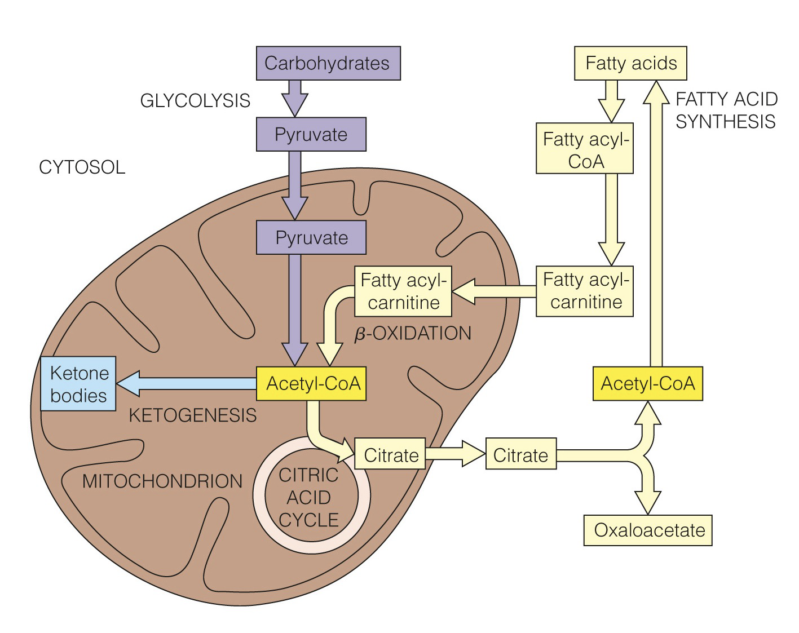 - 在細胞質中 - Citrate 穿膜穿膜

2+3 製作
acetyl-CoA carboxylase (ACC).
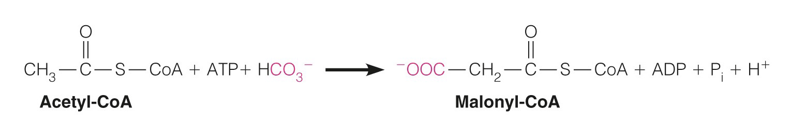 - ACC 先接 E-Biotin，再 HCO~3~^-^
- 產生 Malonyl-CoA (3)
- ==調控步驟==
- citrate 促進 (Acetyl-CoA 用不完了)
- AMPK、PKA、Fatty acyl-CoA 抑制
#### 產生2+3 {#產生23 }
- Acetyl-Acyl Carrier Protein (ACP)
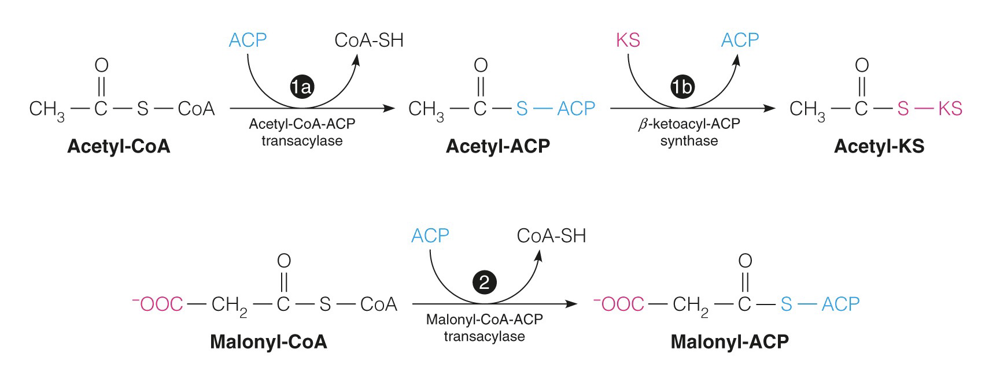
- ACC 先接 E-Biotin，再 HCO~3~^-^
- 產生 Malonyl-CoA (3)
- ==調控步驟==
- citrate 促進 (Acetyl-CoA 用不完了)
- AMPK、PKA、Fatty acyl-CoA 抑制
#### 產生2+3 {#產生23 }
- Acetyl-Acyl Carrier Protein (ACP)
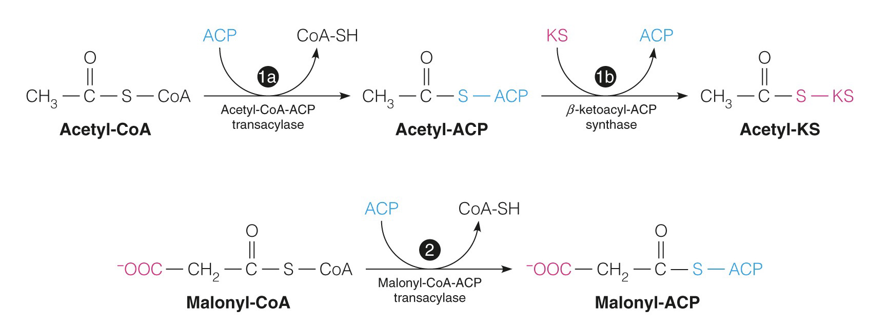
一坨 Megasynthase，變成4+1

β-Ketoacyl-ACP synthase (KS)
- 2+3 →4+1

Get Tg
膽鹽
- 介面活性劑
Tg代謝


Tg 合成
原料
DHAP or Glycerol 轉成 Glycerol-3-phosphate
glycerophosphate acyltransferase (GPAT)
接脂肪酸上去

脂肪暖暖包
- MG → TG → MG
磷脂
激活
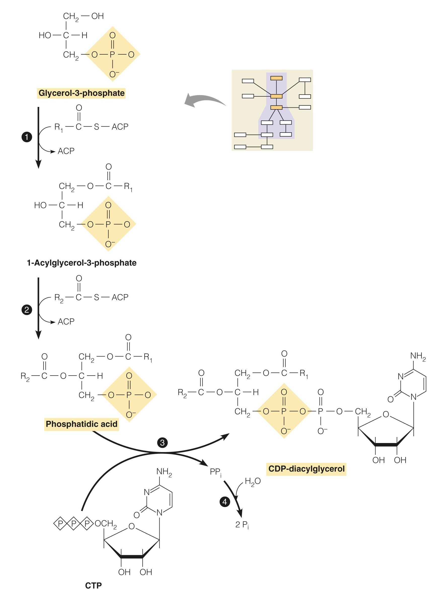- glycerol phosphate
acyltransferase enzymes- 轉酸上去
- CDP-diacylglycerol
synthase- 黏上CTP，變高能
- PPi → 2Pi
分支進化
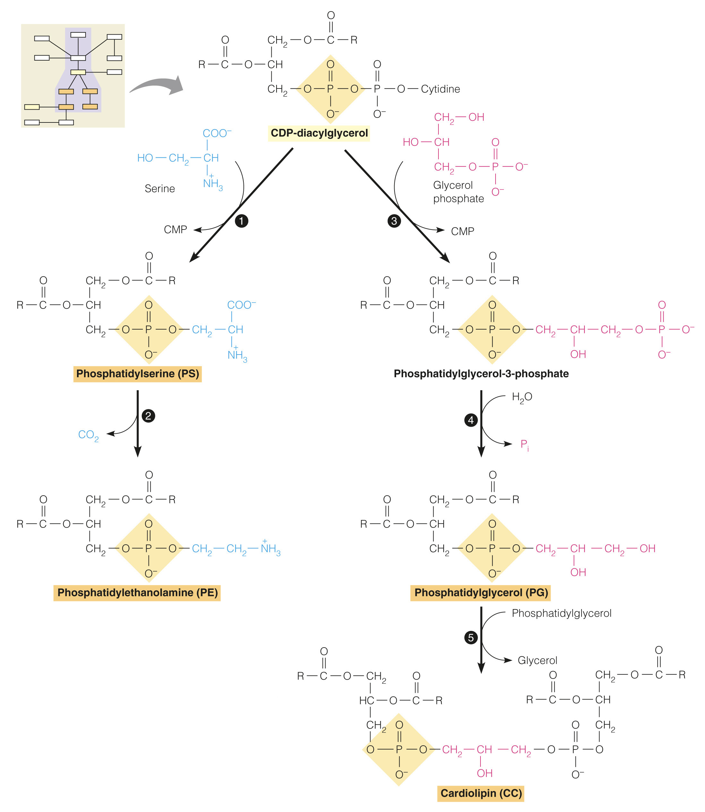看看就好
- PS 一堆被PSD變 PE
PS/PG 調節
 1. PG 帶負電
2. PE不帶電
3. 可以根據膜電位調整
1. PG 帶負電
2. PE不帶電
3. 可以根據膜電位調整

高等生物
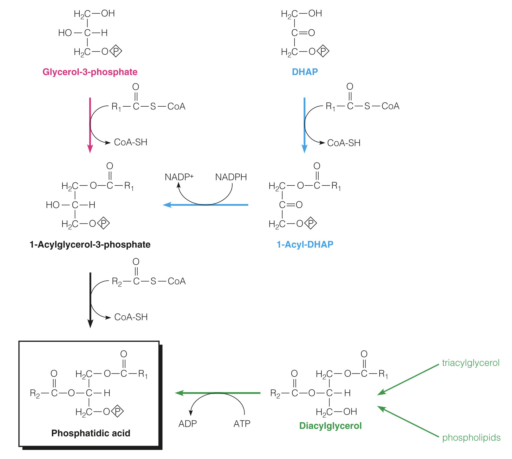 - 多途徑PA做 PC & PE
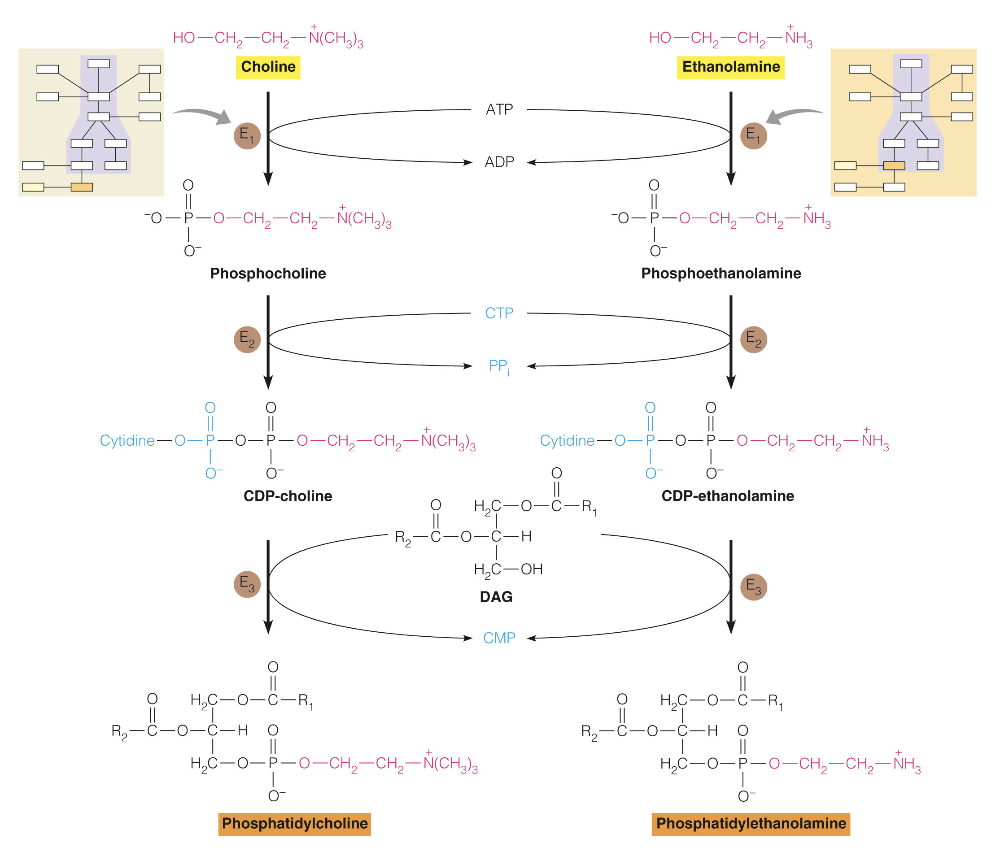- Kinase
- 接上CMP，變成CDP-??
- DAG 黏上去
PEMT
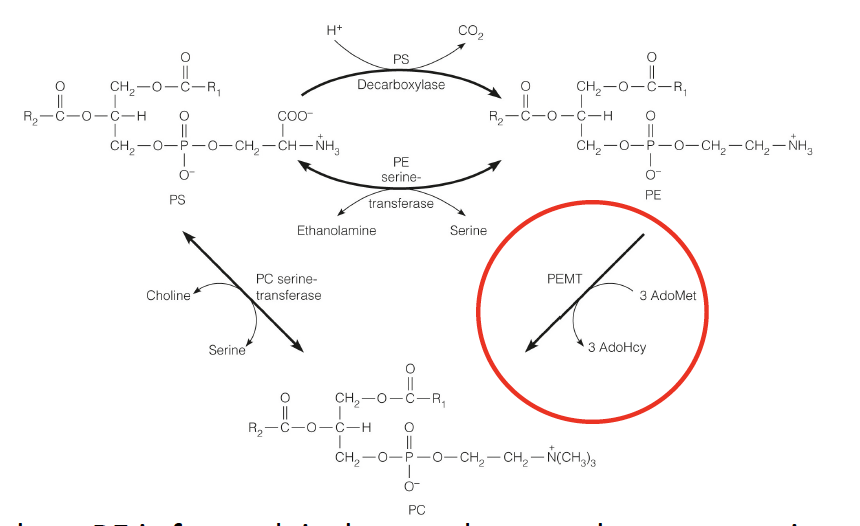 - PE 被加了三次甲基變成PC - 甲基來源==AdoMet== - methionine adenosyltransferase 一次拔三個Pi
PI & Cardiolipin

- Cardiolipin
- 兩個DAG 黏在glycerol
- PI
- CDP-diacylglycerol 接六碳醣
- 負電
碳鏈置換
- phospholipases and specific lysophospholipid acyltransferases
- 切割位置

蛇毒
有些能切掉碳鏈，讓磷脂少一條，變成類似介面活性劑，溶cell
Steroids
合成
27 C
連接acetate


- 產生mevalonate
- HMG-CoA reductase 拔 S CoA, 還原 ketone
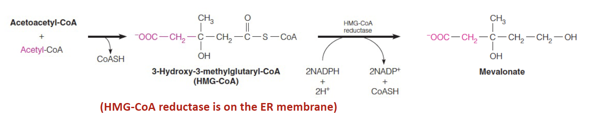

- HMG-CoA reductase 拔 S CoA, 還原 ketone
- From 6 carbon (C6) mevalonate to 5 carbon (C5) IPP and DMAPP:
- 三次磷酸化
- 第三個磷酸、CO2一起走
- IPP isomerase 轉換 IPP and DMAPP

- 越來越長
- DMAPP+ 5 IPP

成環
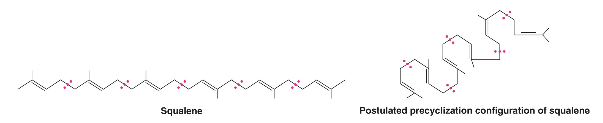調控
Post translate
泛素調控 HMG CoA reductae
- Lanosteral (cholesterol 前驅) 結合 Insig
- Insig 把所有人黏起來
- Ubc7 在 HMG-CoA reductase 上接 Ubiquitin
- Proteasome 降解 HMG-CoA reductase
- Ubiquitin
- 泛素，標記擊殺

Transcript
- 轉錄因子：bHLH
- 高 Cholesterol 會讓 Insig 抓 SCAP
- SREBP
- sterol regulatory element binding proteins
- Scap
- SREBP cleavage-activating protein

用途
Bile acid
- 最大宗

Progestin
- 尾巴少六個，21C

Steroid hormones 合成

Vitamins
Vitamin A
- Retinal 會黏在 Disk 和 Opsin結合，形成 rhodopsin 上感光
- 照光丟出質子，變成 trans


Vitamin D
Active form: 1,25-DHC

合成激素之類的
神經磷脂(sphingomyelin)
- 不包含甘油（glycerol）
- sphingosine(
鞘胺醇，18C)+fatty acid = Ceramide (雙鍊) - Ceramide + Phosphatidylcholine = Sphingomyelin + Diacylglycerol (二醯甘油)

- Ceramide + UDP-α-D-galactose 0r UDP-α-D-glucose → glycosphingolipids

arachidonic acid 類
- Prostaglandins(前列腺素,簡稱 PGS)
- COX-1, COX-2 基因

- COX-1, COX-2 基因
- Thromboxane A2(血栓素)
- Leukotrienes(白三烯素)
- 肺部平滑肌收縮
整理
 ### 磷脂 {#磷脂-1 }
### 磷脂 {#磷脂-1 }


比較生理的東西
肌肉

Note
Glucose-6-phophatase 只有肝臟有，因此肌肉的肝醣不能利用

Cori cycle
- 代謝乳酸
- gluconeogenesis

Creatine 肌酸
- 肌肉瞬間爆發力
- 形成 Creatinine (肌酸酐) 代謝

肝臟

- Malonyl-CoA 抑制酮體形成

Insulin
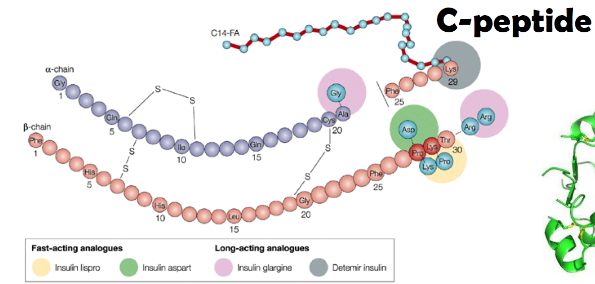
Receptor
- Receptor tyrosine kinase
- 一般會形成 dimer，但是 Insulin R 自身就是 Dimer
GLUT
Glucose transporter
- GLUT2
- Liver
- Pancreatic β cell
- small intestine
- GLUT4
- Skeletal m.
- Cardiac m.
- Adipose tissue
- GLUT5
- 運 flucose
Leptin (瘦素)
- Adipose cell 產生
- 抑制 fat synthesis
- 促進 β-oxidation
- 抑制 Hypothalamus
- 促進產熱
- 促進 Norepinephrine (唯一去偶合劑，搶電子傳遞)

Glucagon / Epinephrine
- 促進分解
- 例外: Epinephrine 會促進肌肉糖解
- cAMP 增加
- 促進脂肪、肝糖分解
- G protein 途徑
- 促進 Protein Kinase A (PKA)

胺代謝
Ubiquitin
- 標記分解
- 標記需花ATP
- HECT E3 把它接在 Lysine
- Proteasome 分解
Amino acid metabolism
Kidney proximal tubular cells
- 產胺
轉胺機制
- α-ketoglutarate L-glutarate
轉胺酶：
- Alanine aminotransferase (ALT; glutamate pyruvate transaminase, GPT)
- Aspartate aminotransferase (AST; glutamate oxaloacetate transaminase, GOT)
輔酶: pyridoxal 5 phosphate (PLP, VitB6)
- 大家的輔酶
- Transamination
- Decarboxylation
- Deamination
- Transsulfuration
- Desulfuration
- Heme synthesis
- Racemization
- Tryptophan metabolism
- Amino acid absorption

血液運輸
-
一般組織氮廢物用 L-glutamine 運送 (轉成中性)

-
肌肉氮廢物用 Alanine 運送
- Pyruvate Alanine

- Pyruvate Alanine
Glutamate Releases in liver
- 先轉胺再脱胺，α-ketoglutarate 進入 TCA cycle
- aminotransferase
- glutamate dehydrogenase
- 在 mitochondria

Urea Cycle 尿素循環
- mitochondria 開始，在細胞質結束
- 一圈排除 2N
mitochondria 內
-
NH4+, CO2, ATP → Carbamoyl phosphate
- 起始酵素： Carbamoyl phosphate Synthetase
-
加 ornithine
- transcarbamoylase

- transcarbamoylase
-
Formation of argininosuccinate through a citrullyl AMP intermediate
- oxaloacetate Aspartate

- oxaloacetate Aspartate
-
Fumarate 連接 Urea cycle, TCA cycle

-
Formation of urea and ornithine
- Urea + Arginine → Ornithine

- Urea + Arginine → Ornithine
轉胺整理
氧化脫胺
-
α-Ketoglutarate ⇆ Glutamate
- Glutamate 進入肝臟 mitochondria
-
Oxaloacetate ⇆ Aspartate
- Aspartate 帶出肝臟 mitochondria
-
L-Glutamate ⇆ L-glutamine
- 組織轉胺，血液運輸
-
Pyruvate ⇆ Alanine
- 肌肉轉胺，血液運輸
蛋白質代謝
生酮生糖？
生酮：3T2L(只生酮)1F (HMV, 必須)

各種輔酶
Tetrahydrofolate

-
來源：Vit B9

-
Serine, glycine, methionine,
histidine metabolism -
攜帶一個碳
- -CH3

- -CH3
Tetrahydrobiopterin (BH4)
- 來自 GTP
- 問就是 BH4


Biotin (B7)
- 帶碳酸根單碳
- Carboxylase 系列的輔酶
- 會和 Avidin 結合 (生雞蛋一堆)

Example
- 糖質新生 step1

pyridoxal 5 phosphate (PLP, VitB6)
- 脱去單碳
- 大家的輔酶
- Transamination
- Decarboxylation
- Deamination
- Transsulfuration
- Desulfuration
- Heme synthesis
- Racemization
- Tryptophan metabolism
- Amino acid absorption
S-Adensylmethionine (SAM, adoMet)

- 甲基化

- Homocysteine
- 需要 PLP 分解
Thiamin pyrophosphate (TPP, Vit B1)
- Pyruvate dehydrogenase
- 參與脫氫
- 缺乏：beriberi (腳氣病)

niacin (Vit B3)
- NADP, NAD 原料
Tryptophan
- 唯一有吲哚 (ex. IAA)
- 血清素 (Serotonin)
- 無光，Serotonon → 褪黑激素 (melatonin)

Tyrosine and Phenylalanine
- 黑色素(Melanin)
- tyrosinase
- 兒茶酚胺（Catecholamine）
- BH4, PLP, 甲基化

- BH4, PLP, 甲基化
phenylketonuria (PKU， 苯酮尿症)
-
Phenylalanine hydroxylase 失能
- Phenylalanine沒法變成 tyrosine

- Phenylalanine沒法變成 tyrosine
-
BH4
-
少一個都不行

-
三個產物都有神經毒 → severe mental retardation (智障)

黑尿症
- 黑尿酸堆積 → 黑尿症
- 一些 Homo 的東西代謝不掉

α Ketoglutarate
- Arg, Glu, His, Pro 都走這條

Glutathione (GSH)
- 清自由基
- NADPH 清除
- 標記分子 （肝臟去毒）
- 折雙硫鍵


γ-aminobutyric acid (GABA)
- PLP 脱 CO2

NO
-
NO synthase 切 Arginine

-
血管擴張： cGMP 導致，Phosphodiesterase (PDE5) 水解

histamine
Histidine 脱 CO2 (PLP) 轉 histamine

Succinyl CoA
- Iso, Met, Thr, Val
- Biotin, B12

Branched Chain Amino Acids metabolism (BCAA)
- 不在肝臟分解，在肌肉分解，防抽筋
- leucine, isoleucine, and valine
- 楓糖漿尿症 (Maple syrup urin MSUD)
- 輔酶： TPP

整理

| 類別 | 胺基酸 | 輔酶 | 衍生物 |
|---|---|---|---|
| 吲哚 | Trp | BH4, PLP | Niacin(菸鹼酸, Vit B3), Serotonin(血清素), Melatonin(退黑激素) |
| 苯環 → Fumarate |
Tyr, Phe | - | Thyroxine(甲狀腺素), Melanin(黑色素), Catecholamines(兒茶酚胺) |
| 五碳直鏈轉胺 → α-Ketoglutarate |
Glu, Gln | - | Glutathione (GSH), γ-aminobutyric acid (GABA，脫酸), Polyamines |
| Arg | - | NO, Polyamines | |
| His | - | Histamine (組織胺，脫酸 ) | |
| Pro | - | - | |
| 四碳一基 → Succinyl-CoA |
Ile | Biotin(B7), cobalamins(B12) |
- |
| Met | - | ||
| Thr | - | ||
| Val | - | ||
| BCAA 脫酸上SCoA |
Ile, Leu, Val | - | - |
| Asp, Asn 轉胺 → Oxaloacetate |
Asp, Asn | - | - |
蛋白質合成
重要三組人
- 轉胺作用分解、合成

Ser, Gly, Cys

Creatine 合成

芳香族胺基酸合成
- shikimic acid pathway
- Chorismate
Nucleotide

salvage pathways
-
nucleoside, Nucleobases ⇆ nucleotide
- 拔磷酸基
-
Nucleobases 回收
- PRPP 高能 C1

- PRPP 高能 C1

Purine 合成
- de novo synthesis
- 從頭合成，從最簡單的分子合成

IMP 合成

- PRPP amidotransferase
- 產生 Phosohoribosylamine (PRA)
- 調控點
- GAR synthetase
- 接 Gly
- GAR transformylase
- THF 參與
- …產生 IMP

產生 GMP, AMP
- GMP
- 氧化 (NAD+ 參與)加氨
- AMP
- 接 Asp 在脫 Fumarate

調控

Purine 代謝
- 脫 Pi
- 脫 Ribose
- Adenosine 需要脫氨成 Inosine
- 轉成 Xanthine
- Xanthine 不能走 salvage pathway 回去

adenosine deaminase (ADA) deficiency
- Adenosine 無法代謝成 Inosine
- dATP 過多抑制 dNTP 形成

高尿酸原因
- PRPP synthetase 負回饋異常
- HGPRT
- Guanine 走不了 salvage pathway
- Lesch-Nyhan syndrome (先天)
- Glucose-6-phosphatase 異常
- G6P 回不去 Glucose，改走 PPP 路徑

高尿酸藥物
- Allopurinol
- 產生 Xanthine 類似物，抑制 Xanthine dehydrogenase ，阻止產生尿酸

Pyrimidine
-
原料:Asp, Glu

-
UTP → CTP (最終產物)
代謝
-
Cytidine 產生 CO2, NH3, β-Alanine
-
Thymine 產生 Succinyl-CoA，進 TCA
- 消耗 NADPH
NTP reductase
- 四聚體，兩組獨立工作
- dATP 抑制 α
- 原料: NDP (TDP 除外)


- dUMP → dTMP 需要 THF
- Thymidylate synthase
- C5 加上甲基
- 5-FU 競爭抑制

藥物
-
AZT
- Thymine
- C3 無法接東西，抑制反轉錄

-
5FU
- U 的 C5 接不上甲基

- U 的 C5 接不上甲基